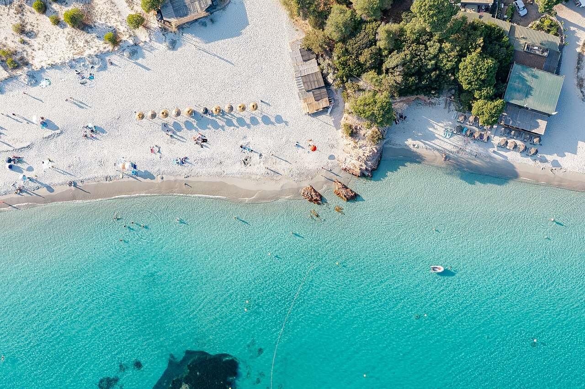
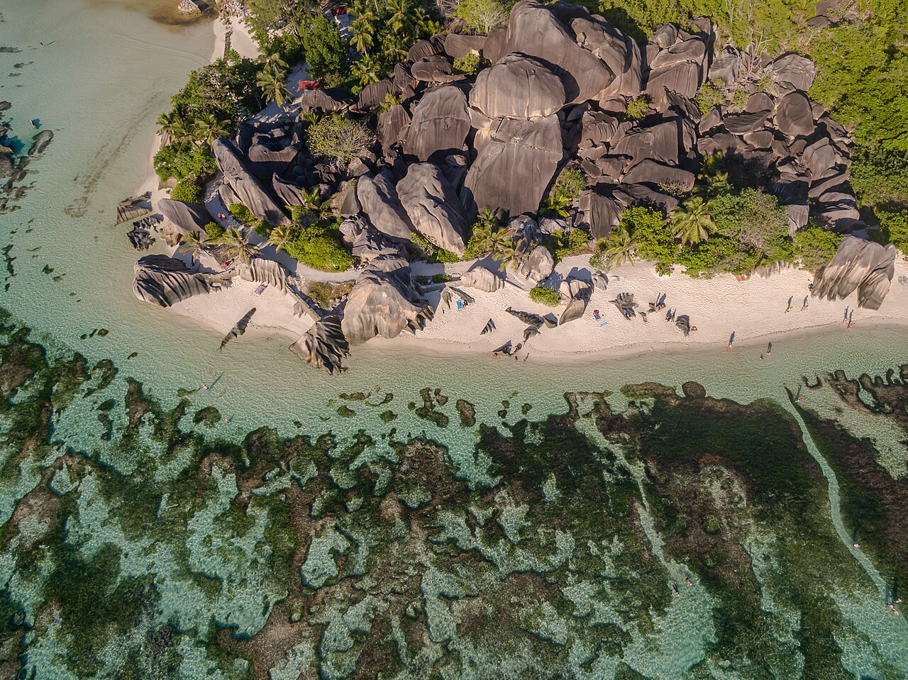
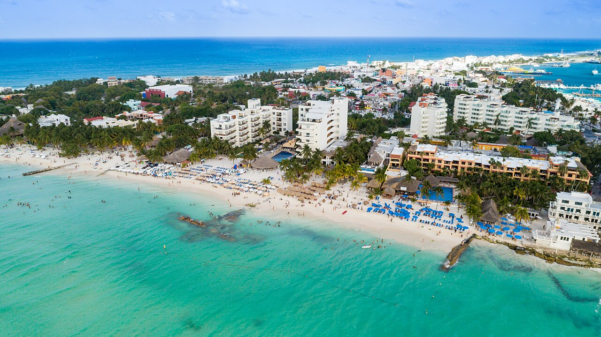
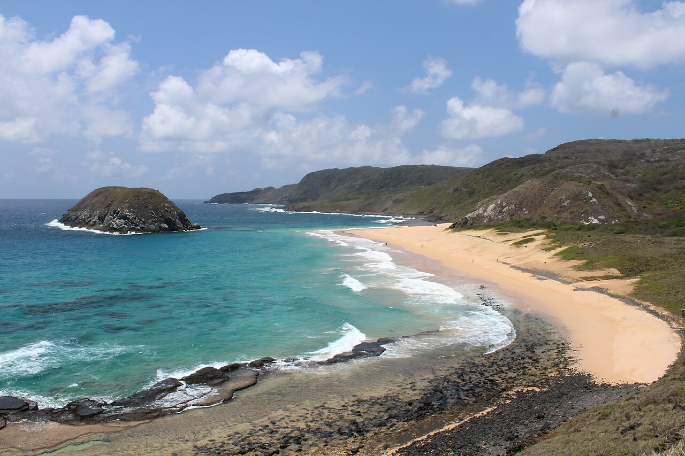
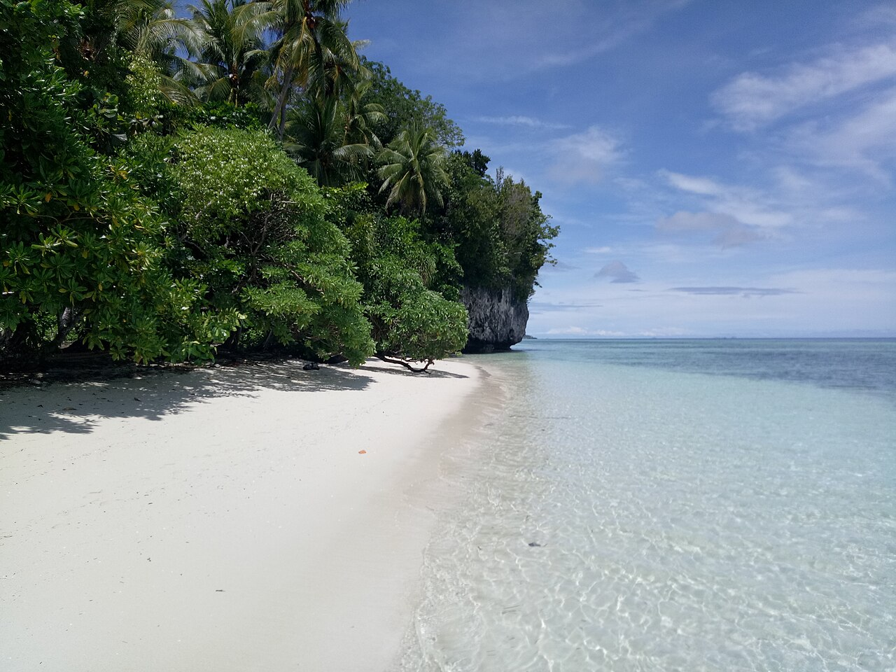
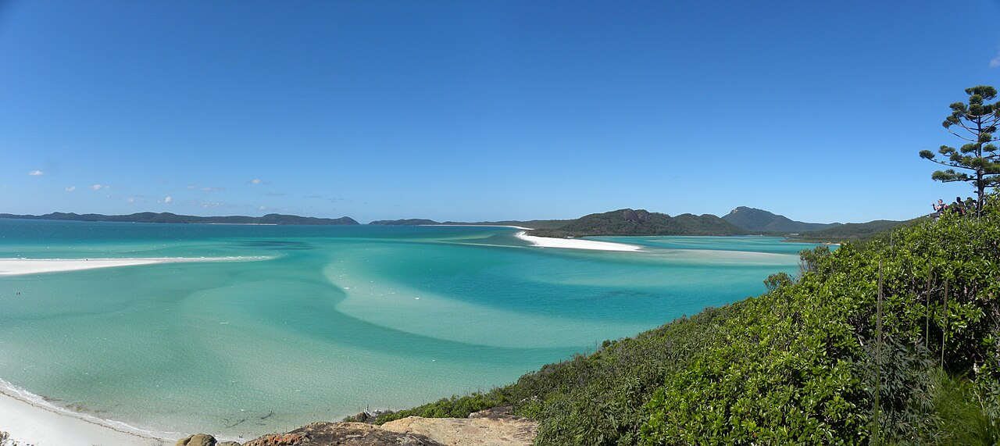

De vrais lieux.
De vrais regards.
Les sept destinations et la vague de l’accueil sont des photographies de photographes, utilisées sous les licences indiquées. Elles sont présentées sans transformation générative ; leur cadrage et le voile de contraste varient selon l’écran.




Amérique du Sud
Fernando de Noronha, Brésil
Photographie : Rosana Antunes
Voir la photo originale ↗CC0 ↗


Accueil · vague
Vague et surfeur
Photographie : byronetmedia
Voir la photo originale ↗Unsplash License ↗